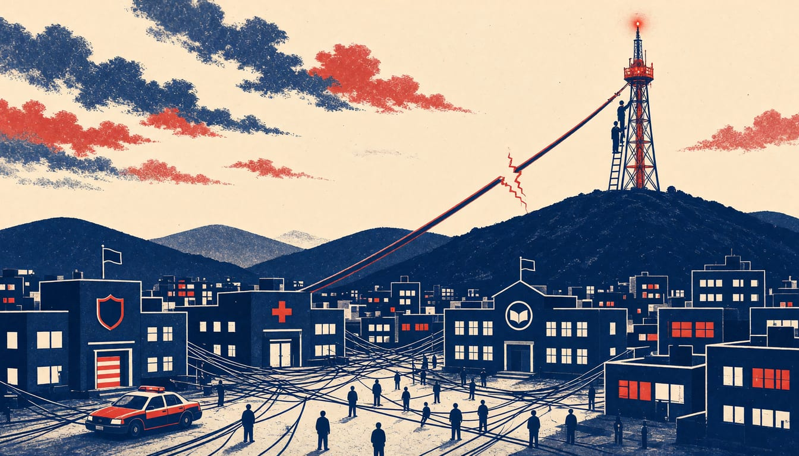

Microsoft outage cut email and Teams across Europe, disrupting UK health appointments and schools
Microsoft says the fault came from a network change it has now reversed, and that there was no sign of malicious activity. Nicky Stewart warned the disruption shows the cost of relying on a single cloud provider.
Correction: An earlier headline said UK police were hit; the sources do not report that.

A Microsoft 365 outage knocked out email, Teams and other cloud services across Europe and worldwide from Thursday, 12 November. The disruption hit Exchange Online, SharePoint, Office 365, Copilot and Power BI. Microsoft reverted a network configuration change at 01.06 GMT on 13 November, which it linked to the outage.
Computerweekly's own mapping found that 46 of 48 UK police forces route email through Microsoft 365, and 47 connect to at least one US hyperscaler. Computerweekly reported that the outage disrupted UK users with lost email sales, blocked access to health appointments and schools closing for the day. iTnews reported that prioritisation of Asia Pacific for recovery may have been influenced by a "digital resilience" agreement Microsoft holds with the Australian federal government.
Microsoft said the elevated load came not from more traffic but from a number of servers being unexpectedly unavailable, which strained the infrastructure that remained. Its recovery path was to cycle the affected systems through a traffic drain, restart and remediation, then a staged return to service. Microsoft added network and traffic-management actions, and expanded capacity using virtual machines. The company reported broader improvement in North America and sustained improvement across much of Europe. It noted encouraging recovery signals in Asia Pacific, with Japan comparatively more stable. Some users still faced intermittent access problems and delayed email delivery as the work continued.
Microsoft said in its status update on Friday that there was no evidence of malicious activity associated with the incident. The company promised to publish a full post-incident report with the root cause and its planned defences once mitigation of the Exchange Online fault is complete. A Microsoft spokesperson did not answer TechCrunch's questions on whether the company has logs or other technical means to detect malicious activity. Meanwhile, providers and government departments warned customers they could not receive or action requests for assistance while the services stayed down.
Nicky Stewart, senior advisor to the Open Cloud Coalition, said the outage is a reminder of the real economic and human costs of customer lock-in and dependency. Stewart warned: "Over-reliance on a single provider leaves businesses and public services vulnerable to disruption and creates wider economic risks." Australia's Home Affairs Minister Tony Burke said Australia's cyber agreement with Microsoft was activated to secure prioritisation for Australian interests in the response. Stewart said greater diversity across cloud providers is essential.